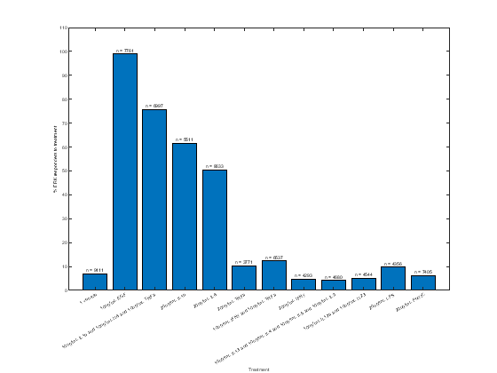
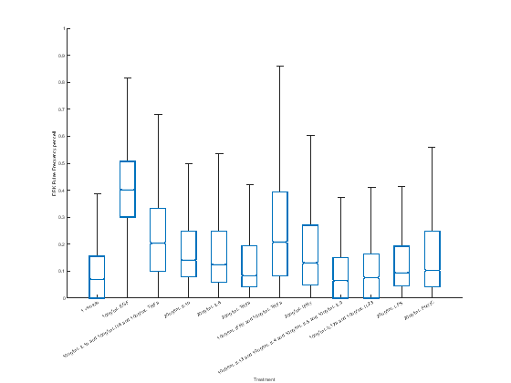
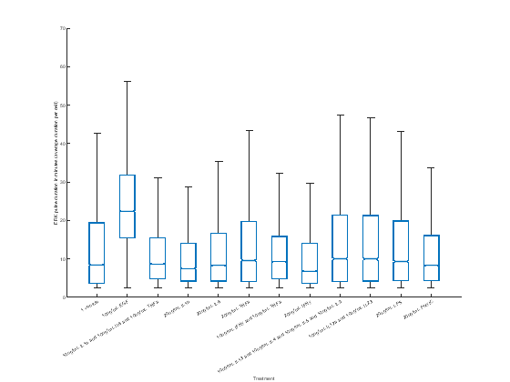
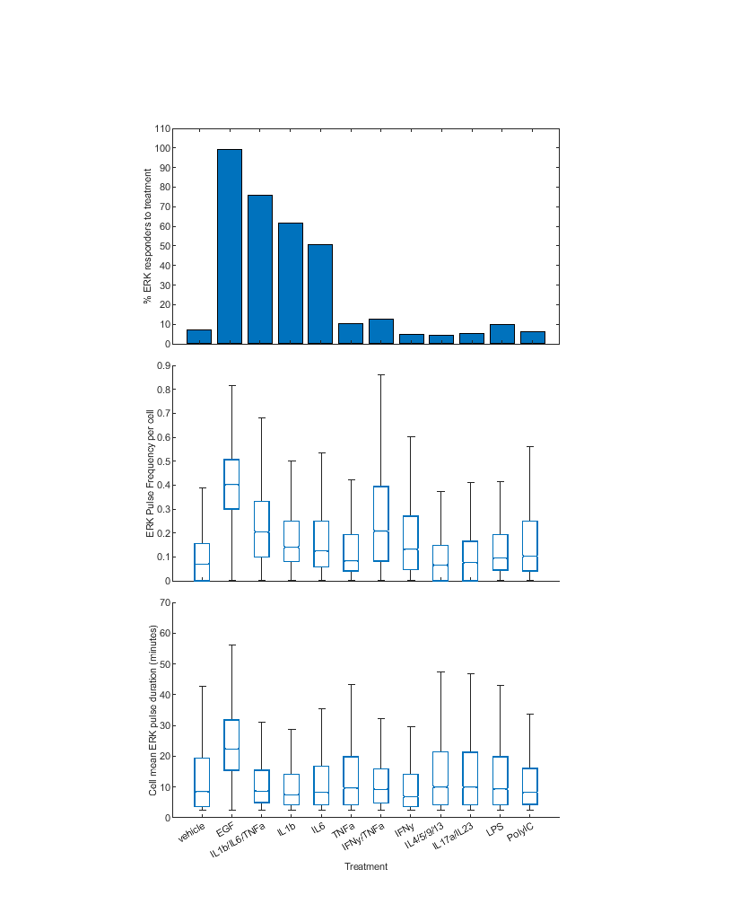

Contents
- Extended Figure 1 - HBE1 cells' ERK response to bulk and single cytokine conditions
- Load the data from multiple experiments to be pooled together
- Merged the loaded data, put them in order, and get general information about the data
- Do the statistics on percent HBE1 cells ERK response to treatments (and plot it) For Figure E1A
- Do the statistics on each cell's mean ERK pulse frequency by treatment (and plot it) For Figure E1B
- Do the statistics on each cell's mean ERK pulse duration by treatment (and plot it) For Figure E1C
- Make the final version of the Figure E1
- Figure Legend:
Extended Figure 1 - HBE1 cells' ERK response to bulk and single cytokine conditions
% add paths addpath('Z:\Code\Nick','Z:\Code\Cell Trace','Z:\Code\Image Analysis') basePath = 'Z:\Processed Data\SPREADs\'; pars = {'Responder','Delta_Mean','Frequency','Mean_Dur','tracklength','Responder_Dur'}; % parameters to collect
Warning: Unable to obtain a change notification handle for Z:\Code\Nick.
Load the data from multiple experiments to be pooled together
% ERKTR Data % % 2020-11-30 HBE1 ERKTR % All cytokine groups and il6 figE1{1} = [basePath,'2020-11-30 HBE1 AMPKAR ERKTR Cytokine Array Stat test\2020-11-30 HBE1 AMPKAR ERKTR Cytokine Array Stat test_Processed_Copy.mat']; % 2021-01-25 HBE1 ERKTR % All cytokine groups and il6 figE1{2} = [basePath,'2021-01-25 HBE1 AMPKAR ERKTR Cytokine Array\2021-01-25 HBE1 AMPKAR ERKTR Cytokine Array_Processed_Copy.mat']; % 2021-07-28 HBE1 ERKTR % IL1b, IL6, EGF, Vehicle, LPS, figE1{3} = [basePath,'2021-07-28 HBE1 AMPKAR ERKTR Cytokine INS OLI 2DG\2021-07-28 HBE1 AMPKAR ERKTR Cytokine INS OLI 2DG_Processed_Copy.mat']; % pull ERKTR pulse analysis from the HBE1 data [paDFa]= convertPulseToDataframe(figE1,{'ERKTR'},'aftertx',2,'tmaxaftertx',24,'pulsepars',pars,'responderdelta',0.3,'respondermaxtx',0.5,'addchannelname',false,'minlength',12,'exclude',{'oli','twodg','simvastatin','NOINS'}); % was 8 hrs % simplify the naming paDFa.treatment = strrep(paDFa.treatment,' at hour 0',''); % remove the "at hour 0" from the treatment names for better labeling paDFa.treatment = strrep(paDFa.treatment,'1 fim at hour -4 and ',''); % remove the "at hour 0" from the treatment names for better labeling paDFa.treatment = strrep(paDFa.treatment,'1 fim at hour -18 and ',''); % remove the "at hour 0" from the treatment names for better labeling % EKAR Data % % 2023-09-06 HBE1 EKAREN4 % IFNy/TNFa, IL1/6/TNF, IL1b, IL6, EGF, Vehicle, POLYIC, INF % subset fim % exclude TwoDG, figE12{1} = [basePath,'2023-09-06 HBE1 EKAREN4 Cyto INS HC 2DG\2023-09-06 HBE1 EKAREN4 Cyto INS HC 2DG_Processed_Copy.mat']; % Run 3 - 2023-09-28 HBE1 EKAR % All cytokine groups and il1b, il6, tnfa, ifny singles figE12{2} = [basePath,'2023-09-28 HBE1 EKAREN4 Cytokine Array\2023-09-28 HBE1 EKAREN4 Cytokine Array_Processed_Copy.mat']; % pull EKAR pulse analysis from the HBE1 data [paDFb] = convertPulseToDataframe(figE12,{'EKAR'},'aftertx',2,'tmaxaftertx',24,'pulsepars',pars,'responderdelta',0.05,'respondermaxtx',0.5,'addchannelname',false,'minlength',12,'exclude',{'oli','twodg','simvastatin','NOINS','NOHC'}); %'exclude',{'IL620n','TNFa20n','Simvastatin'} paDFb.treatment = strrep(paDFb.treatment,' at hour 0',''); % remove the "at hour 0" from the treatment names for better labeling paDFb.treatment = strrep(paDFb.treatment,'1 fim at hour -16 and ',''); % remove the "at hour 0" from the treatment names for better labeling
Warning: 'HBE1_AMPKARERKTRmCard10k_fim14t_IL1310n10t_IL410n10t_IL510n10t_IL910n10t' exceeds MATLAB's maximum name length of 63 characters and has been truncated to 'HBE1_AMPKARERKTRmCard10k_fim14t_IL1310n10t_IL410n10t_IL510n10t_'. Warning: 'HBE1_AMPKARERKTRmCard10k_fim14t_IL1310n22t_IL410n22t_IL510n22t_IL910n22t' exceeds MATLAB's maximum name length of 63 characters and has been truncated to 'HBE1_AMPKARERKTRmCard10k_fim14t_IL1310n22t_IL410n22t_IL510n22t_'. Warning: 'HBE1_EKAREN420k_fim116t_IL1b10n13t_IL610n13t_TNFa10n13t_TwoDG10m18t' exceeds MATLAB's maximum name length of 63 characters and has been truncated to 'HBE1_EKAREN420k_fim116t_IL1b10n13t_IL610n13t_TNFa10n13t_TwoDG10'. Warning: 'HBE1_EKAREN430k_fim116t_IL1310n16t_IL410n16t_IL510n16t_IL910n16t' exceeds MATLAB's maximum name length of 63 characters and has been truncated to 'HBE1_EKAREN430k_fim116t_IL1310n16t_IL410n16t_IL510n16t_IL910n16'.
Merged the loaded data, put them in order, and get general information about the data
% Combine the ERK-KTR and EKAR data paDF2 = [paDFa; paDFb]; paDF = paDF2; % make a copy of the data for manipulation % Exclude treatments we don't indend to plot keepD = any([contains(paDF.treatment," and "|"10ng/mL EGF"),~contains(paDF.treatment,'10ng/mL')],2); paDF = paDF(keepD,:); paDF = paDF(~contains(paDF.treatment,{'1ng/mL','EGF at hour -2'}),:); paDF = paDF(~matches(paDF.treatment,'10ng/mL IL13 and 10ng/mL IL4 and 10ng/mL IL5'),:); % make treatments a categorical but keep the order the data is in txOrder = {'1 vehicle','10ng/mL EGF','10ng/mL IL1b and 10ng/mL IL6 and 10ng/mL TNFa','20ng/mL IL1b','20ng/mL IL6',... '20ng/mL TNFa','10ng/mL IFNy and 10ng/mL TNFa','20ng/mL IFNy','10ng/mL IL13 and 10ng/mL IL4 and 10ng/mL IL5 and 10ng/mL IL9',... '10ng/mL IL17a and 10ng/mL IL23','20ug/mL LPS','20ug/mL PolyIC'}; paDF.treatment = categorical(paDF.treatment,txOrder); % get the statistical data figE1Stats = grpstats(paDF, "treatment",["mean","median","sem","std"],"DataVars",["Frequency","Mean_Dur","Delta_Mean","Responder_Dur"]); % Convert Responder Duration to minutes (from hours) to make it easier when writing figE1Stats.mean_Responder_Dur_in_min = figE1Stats.mean_Responder_Dur*60 % do 1way anova of duration of response compared to EGF [~,~,stats] = anova1(paDF.Responder_Dur,paDF.treatment,'off'); [results,~,~,gnames] = multcompare(stats,"CriticalValueType","dunnett",'ControlGroup',find(matches(stats.gnames,'1 vehicle')),'Display','off','Approximate',false); ERKtxResponderStats = array2table(results,"VariableNames", ["Group","Control Group","Lower Limit","Difference","Upper Limit","P-value"]); ERKtxResponderStats.("Group") = gnames(ERKtxResponderStats.("Group")); ERKtxResponderStats.("Control Group") = gnames(ERKtxResponderStats.("Control Group")) % get the mean of the pulse durations (in minutes) meanPulseDurAllTxs = mean(figE1Stats.mean_Mean_Dur)*60
figE1Stats =
12×19 table
treatment GroupCount mean_Frequency median_Frequency sem_Frequency std_Frequency mean_Mean_Dur median_Mean_Dur sem_Mean_Dur std_Mean_Dur mean_Delta_Mean median_Delta_Mean sem_Delta_Mean std_Delta_Mean mean_Responder_Dur median_Responder_Dur sem_Responder_Dur std_Responder_Dur mean_Responder_Dur_in_min
____________________________________________________________ __________ ______________ ________________ _____________ _____________ _____________ _______________ ____________ ____________ _______________ _________________ ______________ ______________ __________________ ____________________ _________________ _________________ _________________________
1 vehicle 1 vehicle 15181 0.10681 0.06993 0.0010213 0.12583 0.24249 0.14151 0.0026618 0.27359 0.12853 0.031772 0.0030515 0.29127 0.35306 0.2 0.022875 0.50636 21.184
10ng/mL EGF 10ng/mL EGF 17409 0.41569 0.40179 0.0013768 0.18165 0.42337 0.37344 0.0018505 0.2432 0.29739 0.12924 0.0041663 0.36703 1.1361 0.9 0.0092655 0.8052 68.167
10ng/mL IL1b and 10ng/mL IL6 and 10ng/mL TNFa 10ng/mL IL1b and 10ng/mL IL6 and 10ng/mL TNFa 13052 0.24326 0.20408 0.0016765 0.19153 0.20959 0.14523 0.0018478 0.20369 0.1743 0.064745 0.0033489 0.28013 0.40416 0.2 0.0058404 0.41872 24.25
20ng/mL IL1b 20ng/mL IL1b 7941 0.17641 0.14085 0.001583 0.14106 0.18605 0.12448 0.0021653 0.18431 0.056466 0.031354 0.0026365 0.19572 0.30834 0.2 0.0051191 0.29183 18.5
20ng/mL IL6 20ng/mL IL6 14982 0.16978 0.12448 0.001245 0.15239 0.2154 0.13831 0.0019759 0.22514 0.14965 0.048086 0.0030268 0.28123 0.34485 0.2 0.0065361 0.42147 20.691
20ng/mL TNFa 20ng/mL TNFa 7314 0.13279 0.083333 0.0016626 0.14219 0.25284 0.16118 0.0037183 0.27555 0.22716 0.039506 0.0056105 0.34453 0.38793 0.1 0.035704 0.64168 23.276
10ng/mL IFNy and 10ng/mL TNFa 10ng/mL IFNy and 10ng/mL TNFa 11653 0.26666 0.20747 0.0021743 0.23471 0.21146 0.15466 0.0020171 0.20564 0.15716 0.05558 0.0033629 0.2719 0.31566 0.1 0.016588 0.44168 18.939
20ng/mL IFNy 20ng/mL IFNy 6552 0.17585 0.13129 0.0019332 0.15648 0.18031 0.1142 0.0024176 0.17897 0.035502 0.036579 0.00046495 0.030464 0.28 0.2 0.021703 0.28297 16.8
10ng/mL IL13 and 10ng/mL IL4 and 10ng/mL IL5 and 10ng/mL IL9 10ng/mL IL13 and 10ng/mL IL4 and 10ng/mL IL5 and 10ng/mL IL9 9281 0.10626 0.065359 0.0013854 0.13347 0.26915 0.16667 0.003736 0.29306 0.19763 0.055014 0.004476 0.30621 0.6218 0.2 0.063409 0.73126 37.308
10ng/mL IL17a and 10ng/mL IL23 10ng/mL IL17a and 10ng/mL IL23 8615 0.1175 0.076336 0.001504 0.13959 0.27215 0.16598 0.003923 0.3081 0.20493 0.042575 0.0048156 0.32461 0.54688 0.2 0.056558 0.71541 32.813
20ug/mL LPS 20ug/mL LPS 9133 0.13772 0.09434 0.0014784 0.14129 0.25521 0.1556 0.0032914 0.27966 0.20987 0.073103 0.0057133 0.37708 0.45993 0.2 0.035278 0.61813 27.596
20ug/mL PolyIC 20ug/mL PolyIC 12972 0.16717 0.10309 0.0015999 0.18222 0.21663 0.13831 0.0023812 0.23842 0.12929 0.042141 0.0028855 0.2483 0.35083 0.2 0.027034 0.51435 21.05
ERKtxResponderStats =
11×6 table
Group Control Group Lower Limit Difference Upper Limit P-value
________________________________________________________________ _____________ ___________ __________ ___________ __________
{'10ng/mL EGF' } {'1 vehicle'} 0.71017 0.78305 0.85593 0
{'10ng/mL IL1b and 10ng/mL IL6 and 10ng/mL TNFa' } {'1 vehicle'} -0.022809 0.051102 0.12501 0.33743
{'20ng/mL IL1b' } {'1 vehicle'} -0.12048 -0.044723 0.031036 0.52357
{'20ng/mL IL6' } {'1 vehicle'} -0.082875 -0.0082079 0.066459 0.99999
{'20ng/mL TNFa' } {'1 vehicle'} -0.077178 0.034864 0.14691 0.96864
{'10ng/mL IFNy and 10ng/mL TNFa' } {'1 vehicle'} -0.12924 -0.037405 0.054434 0.87017
{'20ng/mL IFNy' } {'1 vehicle'} -0.21221 -0.073061 0.06609 0.65681
{'10ng/mL IL13 and 10ng/mL IL4 and 10ng/mL IL5 and 10ng/mL IL9'} {'1 vehicle'} 0.1159 0.26874 0.42159 1.7119e-05
{'10ng/mL IL17a and 10ng/mL IL23' } {'1 vehicle'} 0.05147 0.19381 0.33616 0.0020195
{'20ug/mL LPS' } {'1 vehicle'} -0.0069154 0.10687 0.22066 0.077603
{'20ug/mL PolyIC' } {'1 vehicle'} -0.11058 -0.0022325 0.10611 1
meanPulseDurAllTxs =
14.6733
Do the statistics on percent HBE1 cells ERK response to treatments (and plot it) For Figure E1A
pull the subset of data that has reponder data (is not nan)
responderz = paDF(~isnan(paDF.Responder),:); % Calculate the count of all entries per treatment group totalCount = groupsummary(responderz,'treatment'); % Calculate the count of responders (true) per treatment group responderCount = groupsummary(responderz(responderz.Responder==1,:), 'treatment'); % Calculate the percentage of responders for each treatment group percResponders = join(responderCount,totalCount,'Keys','treatment'); percResponders.PercResponders = (percResponders.GroupCount_responderCount ./ percResponders.GroupCount_totalCount) * 100 % Make the % responders bar graph percFig = figure; y = bar(percResponders.treatment,percResponders.PercResponders,'LineWidth',1); xlabel('Treatment'); ylabel('% ERK responders to treatment'); % add labels and set font sizes % maybe add number of cells that went into the % caculations? ytips = y.YEndPoints; labels1 = string(percResponders.GroupCount_totalCount); labels1 = strcat("n = ", labels1); text(percResponders.treatment,ytips,labels1,'HorizontalAlignment','center',... 'VerticalAlignment','bottom') % assert font style and size fontname(percFig,"Arial"); fontsize(percFig,4,'points'); ylim([0,110]); % set the figure to inches percFig.Units = "inches";
percResponders =
12×4 table
treatment GroupCount_responderCount GroupCount_totalCount PercResponders
____________________________________________________________ _________________________ _____________________ ______________
1 vehicle 635 9111 6.9696
10ng/mL EGF 7684 7761 99.008
10ng/mL IL1b and 10ng/mL IL6 and 10ng/mL TNFa 5292 6997 75.632
20ng/mL IL1b 3395 5511 61.604
20ng/mL IL6 4358 8633 50.481
20ng/mL TNFa 389 3771 10.316
10ng/mL IFNy and 10ng/mL TNFa 809 6537 12.376
20ng/mL IFNy 204 4293 4.7519
10ng/mL IL13 and 10ng/mL IL4 and 10ng/mL IL5 and 10ng/mL IL9 194 4680 4.1453
10ng/mL IL17a and 10ng/mL IL23 236 4544 5.1937
20ug/mL LPS 423 4356 9.7107
20ug/mL PolyIC 462 7405 6.239
 Do the statistics on each cell's mean ERK pulse frequency by treatment (and plot it) For Figure E1B
figure; boxchart(paDF.treatment,paDF.Frequency,'Notch','on','JitterOutliers','on','MarkerStyle','None','LineWidth',1); xlabel('Treatment'); ylabel('ERK Pulse Frequency per cell'); % add labels and set font sizes fontname(gcf,"Arial"); fontsize(gcf,4,'points'); ylim([0,1]) % do 1way anova of frequency compared to the control [~,~,stats] = anova1(paDF.Frequency,paDF.treatment,'off'); [results,~,~,gnames] = multcompare(stats,"CriticalValueType","dunnett",'ControlGroup',find(matches(stats.gnames,'1 vehicle')),'Display','off','Approximate',false); ERKpulseFreqStats = array2table(results,"VariableNames", ["Group","Control Group","Lower Limit","Difference","Upper Limit","P-value"]); ERKpulseFreqStats.("Group") = gnames(ERKpulseFreqStats.("Group")); ERKpulseFreqStats.("Control Group") = gnames(ERKpulseFreqStats.("Control Group"))
ERKpulseFreqStats =
11×6 table
Group Control Group Lower Limit Difference Upper Limit P-value
________________________________________________________________ _____________ ___________ ___________ ___________ __________
{'10ng/mL EGF' } {'1 vehicle'} 0.30376 0.30888 0.31399 0
{'10ng/mL IL1b and 10ng/mL IL6 and 10ng/mL TNFa' } {'1 vehicle'} 0.13094 0.13645 0.14195 0
{'20ng/mL IL1b' } {'1 vehicle'} 0.063219 0.069602 0.075985 0
{'20ng/mL IL6' } {'1 vehicle'} 0.057657 0.062965 0.068272 0
{'20ng/mL TNFa' } {'1 vehicle'} 0.019419 0.02598 0.03254 0
{'10ng/mL IFNy and 10ng/mL TNFa' } {'1 vehicle'} 0.15417 0.15985 0.16552 0
{'20ng/mL IFNy' } {'1 vehicle'} 0.062222 0.069035 0.075848 0
{'10ng/mL IL13 and 10ng/mL IL4 and 10ng/mL IL5 and 10ng/mL IL9'} {'1 vehicle'} -0.0066282 -0.00055523 0.0055177 1
{'10ng/mL IL17a and 10ng/mL IL23' } {'1 vehicle'} 0.0044671 0.010684 0.016901 1.8549e-05
{'20ug/mL LPS' } {'1 vehicle'} 0.024801 0.030904 0.037007 0
{'20ug/mL PolyIC' } {'1 vehicle'} 0.05485 0.060361 0.065872 0
 Do the statistics on each cell's mean ERK pulse duration by treatment (and plot it) For Figure E1C
figure; boxchart(paDF.treatment,paDF.Mean_Dur*60,'Notch','on','JitterOutliers','on','MarkerStyle','None','LineWidth',1); xlabel('Treatment'); ylabel('ERK pulse duration in minutes (average duration per cell)'); % add labels and set font sizes fontname(gcf,"Arial"); fontsize(gcf,4,'points'); ylim([0,70]) % do 1way anova of mean pulse duration compared to the control [~,~,stats] = anova1(paDF.Mean_Dur,paDF.treatment,'off'); [results,~,~,gnames] = multcompare(stats,"CriticalValueType","dunnett",'ControlGroup',find(matches(stats.gnames,'1 vehicle')),'Display','off','Approximate',false); ERKpulseDurStats = array2table(results,"VariableNames", ["Group","Control Group","Lower Limit","Difference","Upper Limit","P-value"]); ERKpulseDurStats.("Group") = gnames(ERKpulseDurStats.("Group")); ERKpulseDurStats.("Control Group") = gnames(ERKpulseDurStats.("Control Group"))
ERKpulseDurStats =
11×6 table
Group Control Group Lower Limit Difference Upper Limit P-value
________________________________________________________________ _____________ ___________ __________ ___________ __________
{'10ng/mL EGF' } {'1 vehicle'} 0.17263 0.18089 0.18914 0
{'10ng/mL IL1b and 10ng/mL IL6 and 10ng/mL TNFa' } {'1 vehicle'} -0.041782 -0.032893 -0.024005 0
{'20ng/mL IL1b' } {'1 vehicle'} -0.066626 -0.056434 -0.046242 0
{'20ng/mL IL6' } {'1 vehicle'} -0.035842 -0.027087 -0.018333 0
{'20ng/mL TNFa' } {'1 vehicle'} -0.00075948 0.010356 0.021471 0.08306
{'10ng/mL IFNy and 10ng/mL TNFa' } {'1 vehicle'} -0.040256 -0.031025 -0.021794 0
{'20ng/mL IFNy' } {'1 vehicle'} -0.073303 -0.06218 -0.051056 0
{'10ng/mL IL13 and 10ng/mL IL4 and 10ng/mL IL5 and 10ng/mL IL9'} {'1 vehicle'} 0.015946 0.026662 0.037377 2.4802e-11
{'10ng/mL IL17a and 10ng/mL IL23' } {'1 vehicle'} 0.018957 0.029664 0.040371 8.793e-14
{'20ug/mL LPS' } {'1 vehicle'} 0.0025199 0.012723 0.022926 0.0056549
{'20ug/mL PolyIC' } {'1 vehicle'} -0.035177 -0.02586 -0.016544 1.2124e-13
 Make the final version of the Figure E1
figE1 = figure; % plot percent responders subplot(3,1,1); bar(percResponders.treatment,percResponders.PercResponders,'LineWidth',1); ylabel('% ERK responders to treatment'); % add labels and set font sizes ylim([0,110]); xticklabels({}); % plot ERK pulse frequency subplot(3,1,2); boxchart(paDF.treatment,paDF.Frequency,'Notch','on','JitterOutliers','on','MarkerStyle','None','LineWidth',1); ylabel('ERK Pulse Frequency per cell'); % add labels and set font sizes ylim([0,0.9]); xticklabels({}); % plot ERK pulse duration subplot(3,1,3); boxchart(paDF.treatment,paDF.Mean_Dur*60,'Notch','on','JitterOutliers','on','MarkerStyle','None','LineWidth',1); xlabel('Treatment'); ylabel('Cell mean ERK pulse duration (minutes)'); % add labels and set font sizes ylim([0,70]); xticklabels({'vehicle','EGF','IL1b/IL6/TNFa','IL1b','IL6',... 'TNFa','IFNy/TNFa','IFNy','IL4/5/9/13',... 'IL17a/IL23','LPS','PolyIC'}); % Standardize the figure fonts and sizes fontname(gcf,"Arial"); fontsize(gcf,8,'points'); a = gcf; a.Units ="inches"; a.Position = [0.5,0.5,8.5,11]; ax = get(a, 'children'); ax(1).Units = 'Inches'; ax(2).Units = 'Inches'; ax(3).Units = 'Inches'; ax(1).InnerPosition = [2,1,4.5,2.5]; ax(2).InnerPosition = [2,3.75,4.5,2.5]; ax(3).InnerPosition = [2,6.5,4.5,2.5]; saveas(figE1,'Z:\imageData\SPREADs\Plotting_Code\Figure_Outputs\E1_HBE1_ERK_Pulse.fig') saveas(figE1,'Z:\imageData\SPREADs\Plotting_Code\Figure_Outputs\E1_HBE1_ERK_Pulse.svg')
Figure Legend:
Figure E1. Quantification of ERK activity in HBE1 cells in response to pro-inflammatory ligands and controls. (A) The percentage of cells that respond to respective treatments. Responders were defined as cells that increase in ERK-KTR or EKAREN4 signal by 0.3, or 0.05 A.U., respectively, after treatment, relative to mean activity 1 hour before treatment. (B) Notched box plots of ERK pulse frequency over 24 hours following treatment (occurrences of ERK activation per cell per hour) for each condition. Plots represent the median (line at center of notch), 95% confidence interval of the mean (notch), interquartile range (25th/75th percentile, blue box), and range of data excluding outliers (whiskers). (C) Notched box plots showing each cell%s average ERK pulse duration (in minutes). Data for A-C is cumulative from 5 experimental replicates, with >7,500 cells per condition.